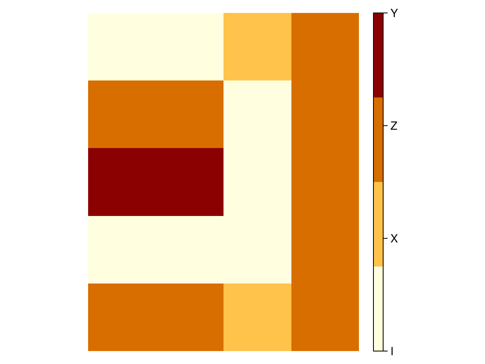
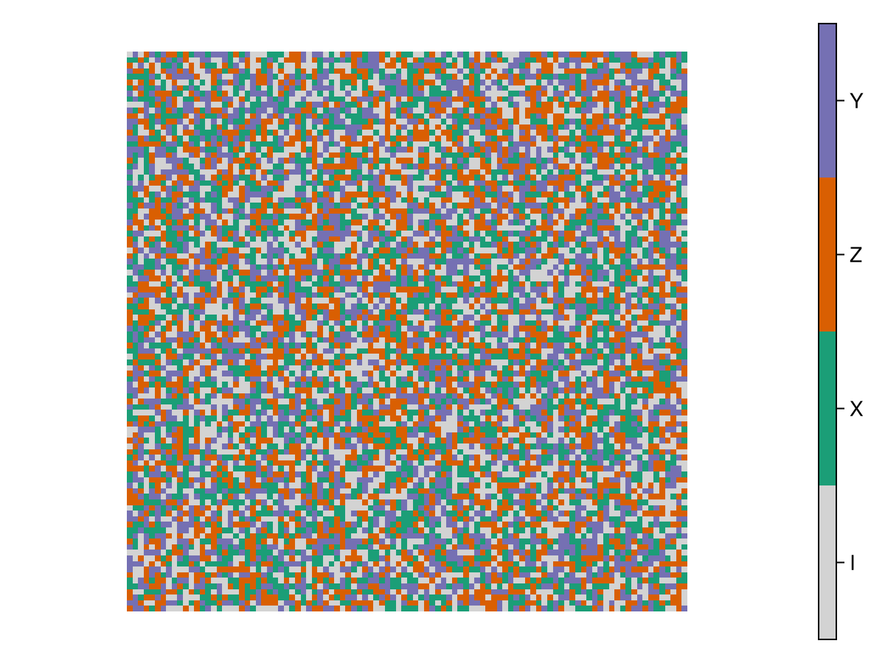

Visualizations
Stabilizers have a plot recipe that can be used with Plots.jl or Makie.jl. It simply displays the corresponding parity check matrix (extracted with stab_to_gf2) as a bitmap image. Circuits can be visualized with Quantikz.jl.
Importing the aforementioned packages together with QuantumClifford is necessary to enable the plotting functionality (implemented as package extensions).
Plots.jl
In Plots.jl we have a simple recipe plot(s::Stabilizer; xzcomponents=...) where xzcomponents=:split plots the tableau heatmap in a wide form, X bits on the left, Z bits on the right; or xzcomponents=:together plots them overlapping, with different colors for I, X, Z, and Y.
using QuantumClifford, Plotsplot(random_stabilizer(20,30), xzcomponents=:split)![]()
using QuantumClifford, Plotsplot(canonicalize!(random_stabilizer(20,30)))![]()
using QuantumClifford, Plotsplot(canonicalize_gott!(random_stabilizer(30))[1], xzcomponents=:split)![]()
using QuantumClifford, Plotsplot(canonicalize_gott!(random_stabilizer(30))[1]; xzcomponents=:together)![]()
using QuantumClifford, Plotsplot(canonicalize_rref!(random_stabilizer(20,30),1:30)[1]; xzcomponents=:together)![]()
Makie.jl
Makie's heatmap can be directly called on Stabilizer.
using QuantumClifford, CairoMakies = S"IIXZ ZZIZ YYIZ IIIZ ZZXZ"f, ax, p = CairoMakie.heatmap(s)hidedecorations!(ax); hidespines!(ax); # remove ticks and spinesax.aspect = DataAspect(); # set a one-to-one aspect ratiof![](data:image/png;base64, iVBORw0KGgoAAAANSUhEUgAABLAAAAOECAYAAACxbcj6AAAAAXNSR0IArs4c6QAAAARnQU1BAACxjwv8YQUAAAAgY0hSTQAAeiYAAICEAAD6AAAAgOgAAHUwAADqYAAAOpgAABdwnLpRPAAAAAlwSFlzAAAdhwAAHYcBj+XxZQAAFvpJREFUeAHswbFpVQEABdCL3A2Cjf2vk9o+RGxSZQY3cRobm4wQgqsEi98L6gR5vxC8gXNOf/8VAAAAABjVAAAAAMCwBgAAAACGNQAAAAAwrAEAAACAYQ0AAAAADGsAAAAAYFgDAAAAAMMaAAAAABjWAAAAAMCwBgAAAACGNQAAAAAwrAEAAACAYQ0AAAAADGsAAAAAYFgDAAAAAMMaAAAAABjWAAAAAMCwBgAAAACGNQAAAAAwrAEAAACAYQ0AAAAADGsAAAAAYFgDAAAAAMMaAAAAABjWAAAAAMCwBgAAAACGNQAAAAAwrAEAAACAYQ0AAAAADGsAAAAAYFgDAAAAAMMagAO37x4CwOV+fvkYWNT7l8CiH5++BuA1DQAAAAAMawAAAABgWAMAAAAAwxoAAAAAGNYAAAAAwLAGAAAAAIY1AAAAADCsAQAAAIBhDQAAAAAMawAAAABgWAMAAAAAwxoAAAAAGNYAAAAAwLAGAAAAAIY1AAAAADCsAQAAAIBhDQAAAAAMawAAAABgWAMAAAAAwxoAAAAAGNYAAAAAwLAGAAAAAIY1AAAAADCsAQAAAIBhDQAAAAAMawAAAABgWAMAAAAAwxoAAAAAGNYAAAAAwLAGAAAAAIY1AAAAADCsAQAAAIBhDQAAAAAMawAAAABgWAMAAAAAwxoAAAAAGNYAAAAAwLAGAAAAAIY1AAAAADCsAQAAAIBhDQAAAAAMawAAAABgWAMAAAAAwxoAAAAAGNYAAAAAwLAGAAAAAIY1AAAAADCsAQAAAIBhDQAAAAAMawAAAABgWAMAAAAAwxoAAAAAGNYAAAAAwLAGAAAAAIY1AAAAADCsAQAAAIBhDQAAAAAMawAAAABgWAMAAAAAwxoAAAAAGNYAAAAAwLAGAAAAAIY1AAAAADCsAQAAAIBhDQAAAAAMawAAAABgWAMAAAAAwxoAAAAAGNYAAAAAwLAGAAAAAIY1AAAAADCsAQAAAIBhDQAAAAAMawAAAABgWAMAAAAAwxoAAAAAGNYAAAAAwLAGAAAAAIY1AAAAADCsAQAAAIBhDQAAAAAMawAAAABgWAMAAAAAwxoAAAAAGNYAAAAAwLAGAAAAAIY1AAAAADCsAQAAAIBhDQAAAAAMawAAAABgWAMAAAAAwxoAAAAAGNYAAAAAwLAGAAAAAIY1AAAAADCsAQAAAIBhDQAAAAAMawAAAABgWAMAAAAAwxoAAAAAGNYAAAAAwLAGAAAAAIY1AAAAADCsAQAAAIBhDQAAAAAMawAAAABgWAMAAAAAwxoAAAAAGNYAAAAAwLAGAAAAAIY1AAAAADCsAQAAAIBhDQAAAAAMawAAAABgWAMAAAAAwxoAAAAAGNYAAAAAwLAGAAAAAIY1AAAAADCsAQAAAIBhDQAAAAAMawAAAABgWAMAAAAAwxoAAAAAGNYAAAAAwLAGAAAAAIY1AAAAADCsAQAAAIBhDQAAAAAMawAAAABgWAMAAAAAwxoAAAAAGNYAAAAAwLAGAAAAAIY1AAAAADCsAQAAAIBhDQAAAAAMawAAAABgWAMAAAAAwxoAAAAAGNYAAAAAwLAGAAAAAIY1AAAAADCsAQAAAIBhDQAAAAAMawAAAABgWAMAAAAAwxoAAAAAGNYAAAAAwLAGAAAAAIY1AAAAADCsAQAAAIBhDQAAAAAMawAAAABgWAMAAAAAwxoAAAAAGNYAAAAAwLAGAAAAAIY1AAAAADCsAQAAAIBhDQAAAAAMawAAAABgWAMAAAAAwxoAAAAAGNYAAAAAwLAGAAAAAIY1AAfOj6cAcLmrz0+BRef7UwDgLWoAAAAAYFgDAAAAAMMaAAAAABjWAAAAAMCwBgAAAACGNQAAAAAwrAEAAACAYQ0AAAAADGsAAAAAYFgDAAAAAMMaAAAAABjWAAAAAMCwBgAAAACGNQAAAAAwrAEAAACAYQ0AAAAADGsAAAAAYFgDAAAAAMMaAAAAABjWAAAAAMCwBgAAAACGNQAAAAAwrAEAAACAYQ0AAAAADGsAAAAAYFgDAAAAAMMaAAAAABjWAAAAAMCwBgAAAACGNQAAAAAwrAEAAACAYQ0AAAAADGsAAAAAYFgDAAAAAMMaAAAAABjWAAAAAMCwBgAAAACGNQAAAAAwrAEAAACAYQ0AAAAADGsAAAAAYFgDAAAAAMMaAAAAABjWAAAAAMCwBgAAAACGNQAAAAAwrAEAAACAYQ0AAAAADGsAAAAAYFgDAAAAAMMaAAAAABjWAAAAAMCwBgAAAACGNQAAAAAwrAEAAACAYQ0AAAAADGsAAAAAYFgDAAAAAMMaAAAAABjWAAAAAMCwBgAAAACGNQAAAAAwrAEAAACAYQ0AAAAADGsAAAAAYFgDAAAAAMMaAAAAABjWAAAAAMCwBgAAAACGNQAAAAAwrAEAAACAYQ0AAAAADGsAAAAAYFgDAAAAAMMaAAAAABjWAAAAAMCwBgAAAACGNQAAAAAwrAEAAACAYQ0AAAAADGsAAAAAYFgDAAAAAMMaAAAAABjWAAAAAMCwBgAAAACGNQAAAAAwrAEAAACAYQ0AAAAADGsAAAAAYFgDAAAAAMMaAAAAABjWAAAAAMCwBgAAAACGNQAAAAAwrAEAAACAYQ0AAAAADGsAAAAAYFgDAAAAAMMaAAAAABjWAAAAAMCwBgAAAACGNQAAAAAwrAEAAACAYQ0AAAAADGsAAAAAYFgDAAAAAMMaAAAAABjWAAAAAMCwBgAAAACGNQAAAAAwrAEAAACAYQ0AAAAADGsAAAAAYFgDAAAAAMMaAAAAABjWAAAAAMCwBgAAAACGNQAAAAAwrAEAAACAYQ0AAAAADGsAAAAAYFgDAAAAAMMaAAAAABjWAAAAAMCwBgAAAACGNQAAAAAwrAEAAACAYQ0AAAAADGsAAAAAYFgDAAAAAMMaAAAAABjWAAAAAMCwBgAAAACGNQAAAAAwrAEAAACAYQ0AAAAADGsAAAAAYFgDAAAAAMMaAAAAABjWAAAAAMCwBgAAAACGNQAAAAAwrAEAAACAYQ0AAAAADGsAAAAAYFgDAAAAAMMaAAAAABjWAAAAAMCwBgAAAACGNQAAAAAwrAEAAACAYQ0AAAAADGsAAAAAYFgDAAAAAMMaAAAAABjWAAAAAMCwBgAAAACGNQAAAAAwrAEAAACAYQ0AAAAADGsAAAAAYFgDAAAAAMMaAAAAABjWAAAAAMCwBgAAAACGNQAAAAAwrAE48HzzLQBc7i7XAQDg32kAAAAAYFgDAAAAAMMaAAAAABjWAAAAAMCwBgAAAACGNQAAAAAwrAEAAACAYQ0AAAAADGsAAAAAYFgDAAAAAMMaAAAAABjWAAAAAMCwBgAAAACGNQAAAAAwrAEAAACAYQ0AAAAADGsAAAAAYFgDAAAAAMMaAAAAABjWAAAAAMCwBgAAAACGNQAAAAAwrAEAAACAYQ0AAAAADGsAAAAAYFgDAAAAAMMaAAAAABjWAAAAAMCwBgAAAACGNQAAAAAwrAEAAACAYQ0AAAAADGsAAAAAYFgDAAAAAMMaAAAAABjWAAAAAMCwBgAAAACGNQAAAAAwrAEAAACAYQ0AAAAADGsAAAAAYFgDAAAAAMMaAAAAABjWAAAAAMCwBgAAAACGNQAAAAAwrAEAAACAYQ0AAAAADGsAAAAAYFgDAAAAAMMaAAAAABjWAAAAAMCwBgAAAACGNQAAAAAwrAEAAACAYQ0AAAAADGsAAAAAYFgDAAAAAMMaAAAAABjWAAAAAMCwBgAAAACGNQAAAAAwrAEAAACAYQ0AAAAADGsAAAAAYFgDAAAAAMMaAAAAABjWAAAAAMCwBgAAAACGNQAAAAAwrAEAAACAYQ0AAAAADGsAAAAAYFgDAAAAAMMaAAAAABjWAAAAAMCwBgAAAACGNQAAAAAwrAEAAACAYQ0AAAAADGsAAAAAYFgDAAAAAMMaAAAAABjWAAAAAMCwBgAAAACGNQAAAAAwrAEAAACAYQ0AAAAADGsAAAAAYFgDAAAAAMMaAAAAABjWAAAAAMCwBgAAAACGNQAAAAAwrAEAAACAYQ0AAAAADGsAAAAAYFgDAAAAAMMaAAAAABjWAAAAAMCwBgAAAACGNQAAAAAwrAEAAACAYQ0AAAAADGsAAAAAYFgDAAAAAMMaAAAAABjWAAAAAMCwBgAAAACGNQAAAAAwrAEAAACAYQ0AAAAADGsAAAAAYFgDAAAAAMMaAAAAABjWAAAAAMCwBgAAAACGNQAAAAAwrAEAAACAYQ0AAAAADGsAAAAAYFgDAAAAAMMaAAAAABjWAAAAAMCwBgAAAACGNQAAAAAwrAEAAACAYQ0AAAAADGsAAAAAYFgDAAAAAMMaAAAAABjWAAAAAMCwBgAAAACGNQAAAAAwrAEAAACAYQ0AAAAADGsAAAAAYFgDAAAAAMMaAAAAABjWAAAAAMCwBgAAAACGNQAAAAAwrAEAAACAYQ0AAAAADGsAAAAAYFgDAAAAAMMaAAAAABjWAAAAAMCwBgAAAACGNQAAAAAwrAEAAACAYQ0AAAAADGsAAAAAYFgDAAAAAMMaAAAAABjWAAAAAMCwBgAAAACGNQAAAAAwrAEAAACAYQ0AAAAADGsAAAAAYFgDAAAAAMMaAAAAABjWAAAAAMCwBgAAAACGNQAAAAAwrAEAAACAYQ3AgbsP1wEAAID/pQEAAACAYQ0AAAAADGsAAAAAYFgDAAAAAMMaAAAAABjWAAAAAMCwBgAAAACGNQAAAAAwrAEAAACAYQ0AAAAADGsAAAAAYFgDAAAAAMMaAAAAABjWAAAAAMCwBgAAAACGNQAAAAAwrAEAAACAYQ0AAAAADGsAAAAAYFgDAAAAAMMaAAAAABjWAAAAAMCwBgAAAACGNQAAAAAwrAEAAACAYQ0AAAAADGsAAAAAYFgDAAAAAMMaAAAAABjWAAAAAMCwBgAAAACGNQAAAAAwrAEAAACAYQ0AAAAADGsAAAAAYFgDAAAAAMMaAAAAABjWAAAAAMCwBgAAAACGNQAAAAAwrAEAAACAYQ0AAAAADGsAAAAAYFgDAAAAAMMaAAAAABjWAAAAAMCwBgAAAACGNQAAAAAwrAEAAACAYQ0AAAAADGsAAAAAYFgDAAAAAMMaAAAAABjWAAAAAMCwBgAAAACGNQAAAAAwrAEAAACAYQ0AAAAADGsAAAAAYFgDAAAAAMMaAAAAABjWAAAAAMCwBgAAAACGNQAAAAAwrAEAAACAYQ0AAAAADGsAAAAAYFgDAAAAAMMaAAAAABjWAAAAAMCwBgAAAACGNQAAAAAwrAEAAACAYQ0AAAAADGsAAAAAYFgDAAAAAMMaAAAAABjWAAAAAMCwBgAAAACGNQAAAAAwrAEAAACAYQ0AAAAADGsAAAAAYFgDAAAAAMMaAAAAABjWAAAAAMCwBgAAAACGNQAAAAAwrAEAAACAYQ0AAAAADGsAAAAAYFgDAAAAAMMaAAAAABjWAAAAAMCwBgAAAACGNQAAAAAwrAEAAACAYQ0AAAAADGsAAAAAYFgDAAAAAMMaAAAAABjWAAAAAMCwBgAAAACGNQAAAAAwrAEAAACAYQ0AAAAADGsAAAAAYFgDAAAAAMMaAAAAABjWAAAAAMCwBgAAAACGNQAAAAAwrAEAAACAYQ0AAAAADGsAAAAAYFgDAAAAAMMaAAAAABjWAAAAAMCwBgAAAACGNQAAAAAwrAEAAACAYQ0AAAAADGsAAAAAYFgDAAAAAMMaAAAAABjWAAAAAMCwBgAAAACGNQAAAAAwrAEAAACAYQ0AAAAADGsAAAAAYFgDAAAAAMMaAAAAABjWAAAAAMCwBgAAAACGNQAAAAAwrAEAAACAYQ0AAAAADGsAAAAAYFgDAAAAAMMaAAAAABjWAAAAAMCwBgAAAACGNQAAAAAwrAEAAACAYQ0AAAAADGsAAAAAYFgDAAAAAMMaAAAAABjWAAAAAMCwBgAAAACGNQAAAAAwrAEAAACAYQ0AAAAADGsAAAAAYFgDAAAAAMMaAAAAABjWAAAAAMCwBgAAAACGNQAAAAAwrAEAAACAYQ0AAAAADGsAAAAAYFgDAAAAAMMaAAAAABjWAAAAAMCwBuDA+fEUAC736/v7wKLmJQDwFjUAAAAAMKwBAAAAgGENAAAAAAxrAAAAAGBYAwAAAADDGgAAAAAY1gAAAADAsAYAAAAAhjUAAAAAMKwBAAAAgGENAAAAAAxrAAAAAGBYAwAAAADDGgAAAAAY1gAAAADAsAYAAAAAhjUAAAAAMKwBAAAAgGENAAAAAAxrAAAAAGBYAwAAAADDGgAAAAAY1gAAAADAsAYAAAAAhjUAAAAAMKwBAAAAgGENAAAAAAxrAAAAAGBYAwAAAADDGgAAAAAY1gAAAADAsAYAAAAAhjUAAAAAMKwBAAAAgGENAAAAAAxrAAAAAGBYAwAAAADDGgAAAAAY1gAAAADAsAYAAAAAhjUAAAAAMKwBAAAAgGENAAAAAAxrAAAAAGBYAwAAAADDGgAAAAAY1gAAAADAsAYAAAAAhjUAAAAAMKwBAAAAgGENAAAAAAxrAAAAAGBYAwAAAADDGgAAAAAY1gAAAADAsAYAAAAAhjUAAAAAMKwBAAAAgGENAAAAAAxrAAAAAGBYAwAAAADDGgAAAAAY1gAAAADAsAYAAAAAhjUAAAAAMKwBAAAAgGENAAAAAAxrAAAAAGBYAwAAAADDGgAAAAAY1gAAAADAsAYAAAAAhjUAAAAAMKwBAAAAgGENAAAAAAxr/rQHxzQAAgEQwG44ca8McahCAiFhuKEtAAAAAAxrAAAAAGBYAwAAAADDGgAAAAAY1gAAAADAsAYAAAAAhjUAAAAAMKwBAAAAgGENAAAAAAxrAAAAAGBYAwAAAADDGgAAAAAY1gAAAADAsAYAAAAAhjUAAAAAMKwBAAAAgGENAAAAAAxrAAAAAGBYAwAAAADDGgAAAAAY1gAAAADAsAYAAAAAhjUAAAAAMKwBAAAAgGENAAAAAAxrAAAAAGBYAwAAAADDGgAAAAAY1gAAAADAsAYAAAAAhjUAAAAAMKwBAAAAgGENAAAAAAxrAAAAAGBYAwAAAADDGgAAAAAY1gAAAADAsAYAAAAAhjUAAAAAMKwBAAAAgGENAAAAAAxrAAAAAGBYAwAAAADDGgAAAAAY1gAAAADAsAYAAAAAhjUAAAAAMKwBAAAAgGENAAAAAAxrAAAAAGBYAwAAAADDGgAAAAAY1gAAAADAsAYAAAAAhjUAAAAAMKwBAAAAgGENAAAAAAxrAAAAAGBYAwAAAADDGgAAAAAY1gAAAADAsAYAAAAAhjUAAAAAMKwBAAAAgGENAAAAAAxrAAAAAGBYAwAAAADDGgAAAAAY1gAAAADAsAYAAAAAhjUAAAAAMKwBAAAAgGENAAAAAAxrAAAAAGBYAwAAAADDGgAAAAAY1gAAAADAsAYAAAAAhjUAAAAAMKwBAAAAgGENAAAAAAxrAAAAAGBYAwAAAADDGgAAAAAY1gAAAADAsAYAAAAAhjUAAAAAMKwBAAAAgGENAAAAAAxrAAAAAGBYAwAAAADDGoAX97kCwAcnAAD8qAEAAACAYQ0AAAAADGsAAAAAYFgDAAAAAMMaAAAAABjWAAAAAMCwBgAAAACGNQAAAAAwrAEAAACAYQ0AAAAADGsAAAAAYFgDAAAAAMMaAAAAABjWAAAAAMCwBgAAAACGNQAAAAAwrAEAAACAYQ0AAAAADGsAAAAAYFgDAAAAAMMaAAAAABjWAAAAAMCwBgAAAACGNQAAAAAwrAEAAACAYQ0AAAAADGsAAAAAYFgDAAAAAMMaAAAAABjWAAAAAMCwBgAAAACGPYs1JGjuLrmnAAAAAElFTkSuQmCC)
A full Makie recipe is available as well (supporting xzcomponents)
using QuantumClifford, CairoMakies = S"IIXZ ZZIZ YYIZ IIIZ ZZXZ"f, ax, p = stabilizerplot(s, xzcomponents=:together)hidedecorations!(ax); hidespines!(ax)ax.aspect = DataAspect()f![Example block output]()
You can easily add colorbars (and change the colormap) as well:
using QuantumClifford, CairoMakiefig = Figure()ax, p = stabilizerplot(fig[1, 1], s, colormap=cgrad(:heat, 4, categorical = true))hidedecorations!(ax)hidespines!(ax)xlims!(ax, 0.5, size(s,2)+0.5) # otherwise there is paddingylims!(ax, 0.5, size(s,1)+0.5) # otherwise there is padding# set the aspect ratio of the plotax.aspect = DataAspect()# set the aspect ratio of the layoutcolsize!(fig.layout, 1, Aspect(1, size(s,2)/size(s,1)))Colorbar(fig[1, 2], p, ticks = (0:3, ["I", "X", "Z", "Y"]))fig
Or set a completely custom set of colors:
fig = Figure()ax, p = stabilizerplot(fig[1, 1], s, colormap=cgrad([:lightgray,RGBf(1,0.4,0.4),RGBf(0.3,1,0.5),RGBf(0.4,0.4,1)], 4, categorical = true))hidedecorations!(ax)hidespines!(ax)xlims!(ax, 0.5, size(s,2)+0.5)ylims!(ax, 0.5, size(s,1)+0.5)ax.aspect = DataAspect()colsize!(fig.layout, 1, Aspect(1, size(s,2)/size(s,1)))Colorbar(fig[2, 1], p, ticks = (0:3, ["I", "X", "Z", "Y"]), vertical = false, flipaxis = false)fig![Example block output]()
You might have noticed, Makie recipes do not let you edit the axes or figure, rather they only permit you to set the plot content. Which is why we use hidedecorations!, hidesplines!, and DataAspect to further modify the plot. However, these defaults are also available in stabilizerplot_axis.
using QuantumClifford, CairoMakief=Figure()stabilizerplot_axis(f[1,1],random_stabilizer(100))f
Quantikz.jl
With the Quantikz library you can visualize gates or sequences of gates.
using QuantumClifford, Quantikzcircuit = [sCNOT(1,2), SparseGate(random_clifford(4), [1,4,5,6]), sMZ(4)]![Example block output]()